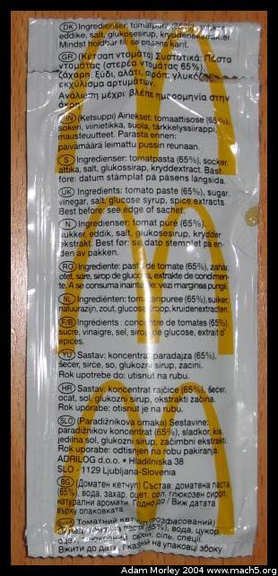

Sometimes I don't plan ahead when leaving school and end up waiting a bit at the train station. I've found that passing the time eating french fries is quite tasty.

A ketchup packet. I count 14 languages. Danish, Greek, Finnish, Sweedish, English (British), Norweigan, Romanian, Dutch (?), French, ?, Hungarian (?), Slovak, ?, ? (if you know them to be different, please let me know, I'm interested).The first two times I ordered in McDonalds, I felt it would be practical to use English. I asked for a small french fry, paid 9 Kroner (+ .50 for the ketchup), and went on my merry way. The third time, I was adventurous -- I ordered in Danish. Or so I thought. "Jeg skal have en lille french fry, tak." (I am going to have a small french fry, thanks) Turns out, I got a small fountain drink, a Fanta. Think McDonalds orange drink, but with carbonation. I found this rather odd, but the place was loud, and I was somewhat in a hurry, so I decided to try the mysterious orange drink. Good, but the french fries were far better. The second try in Danish, I cheated and looked at the value menu outside the McDonalds. A small french fry was listed as "en lille pommes frites," which seemed odd, because that was not the word I remembered for potatoes. I couldn't remember what the word was at the time. So I ordered.
"Jeg skal have en lille pommes frites, tak" and I magically got a small french fry and something about ketchup or mayonaise. I naturally replied ketchup, gave my ti Kroner, got my fifty ore, and went on my way. Later that evening I asked my host family about it. Apparently, the Danes, in their normally smart fashion, say potato in French. "Les pommes" -- the potatoes. Many things are like that in Denmark, just well thought out or otherwise quite "smart" as the Brits would say.
Adam can be reached at adam dot morley at gmail dot com